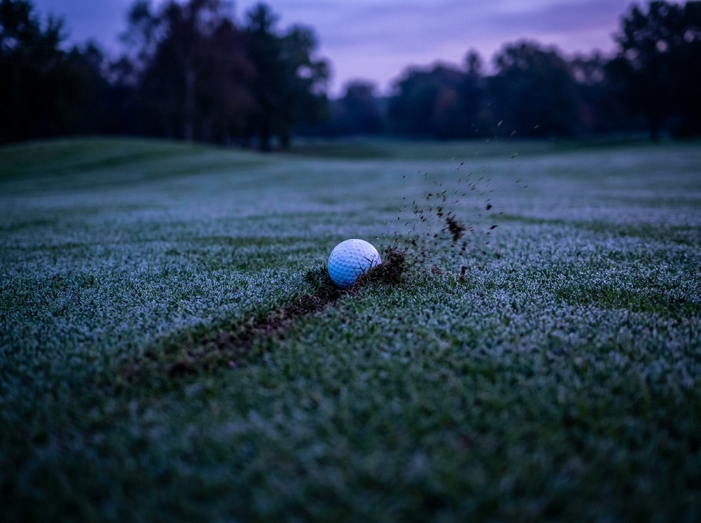

Academy · Flight
Backspin
Backspin is the ball's backward rotation — the top spinning back toward you — that generates aerodynamic lift and holds the shot in the air.
Your mission
Build 7,000+ rpm — then kill the spin.
Build the spin
Then kill it (driver move)
Spin Lab
7-iron · live engine
Build 7,000+ rpm, then kill it below 3,500.
Flight
Previous
Launchapex 30 mland 54.4°
Backspin
7128
rpm
Optimal iron spin
—rpm
Flyer lie · Real-world estimate — not the simulator
Carry
158m
Height
30m
A 7-iron makes optimal iron spin — spin loft 33° at a clean 120 mph strike.
Influence
±1 unit · live engine
How much each lever moves backspin, at your current Spin Lab settings.
Real-world layer
≈ —rpm
in this lie
—

Reality: the ball bites. Spin loft is why — a bad lie is why it sometimes won't.
Real-world estimate — not the simulatorMyth-bust
Myth 1 of 3
—
—
Two real engine runs
Mastery quiz
—
Mastery result
Lesson mastered
Backspin
0XP
You read spin loft, ball speed and friction the way an engineer does.
Not quite mastered
0 / 5
You need 4 of 5 to master this lesson. The physics is all here — take another run at the quiz.